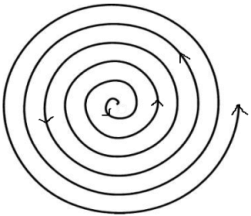

⭐ GOAL: ป้องกันไม่ให้เกิด IAD ⭐
ให้การดูแลการพยาบาล ดังนี้
- ประเมินสภาพผิวหนังบริเวณ Perineum ทุก 8 ชั่วโมง
- ขจัดอุจจาระปัสสาวะด้วยสำลีชุบน้ำเปล่าและ/หรือ Skin cleanser โดยไม่ขัดถูและซับให้แห้ง
- ใช้แผ่นรองซับแทนผ้าอ้อมสำเร็จรูปและเปลี่ยนทุกครั้งที่มีการขับถ่าย
- ทาปิโตรเลียมออยท์เมน (วาสลีน) หรือ Skin barrier film ทุกครั้งหลังทำความสะอาด
- หากอุจจาระเป็นน้ำเหลว ทา 25% Zinc Oxide Ointment ทุกครั้งหลังทำความสะอาด
- ใส่ผ้าอ้อมสำเร็จรูปและเปลี่ยนทุกครั้งที่ขับถ่าย
- พลิกตะแคงตัวผู้ป่วย เปลี่ยนท่าผู้ป่วยทุก 2 ชั่วโมง/li>
- ประเมินผิวหนังทุกครั้งที่มีกิจกรรมพยาบาลและบันทึก Nurse note
🧼 การทำความสะอาด
ทำความสะอาดทันทีหรือทิ้งไว้ไม่เกิน 15 นาที เมื่อผู้ป่วยมีการขับถ่าย ใช้น้ำสะอาดหรือผลิตภัณฑ์สำหรับเด็ก หลีกเลี่ยงผลิตภัณฑ์ที่มีความเป็นด่างสูง แอลกอฮอล์ หรือ น้ำหอม
อาจใช้สำลีชุบน้ำสะอาดเช็ดผิวหนังอย่างเบามือ ในลักษณะเป็นเกลียว (spiral motion)

หรือเป็นวงกลม (circular motion)

ซับให้แห้งด้วยผ้าหรือกระดาษชำระเนื้อนุ่ม
❗ หลักการสำคัญ:
ห้ามขัด เช็ด ถู ผิวหนังแรง ๆ
เพราะจะเพิ่มการอักเสบและเสี่ยงต่อการเกิดแผลกดทับ
🧴 การดูแลผิวหนัง
ปัจจุบันมีผลิตภัณฑ์เคลือบปกป้องผิวหนังหลายกลุ่ม ดังนี้
-
ผลิตภัณฑ์กลุ่มปิโตรเลียมเจล เช่น วาสลีน
มีลักษณะโปร่งใส ประเมินผิวหนังได้ง่าย สามารถเคลือบปกป้องผิวหนังได้
แต่ผลิตภัณฑ์ไม่ติดทนผิวหนัง มีความเหนียวเหนอะหนะ และอาจอุดตันรูขุมขน
จึงควรทาบาง ๆ ใช้กับผิวหนังปกติเพื่อป้องกันแผล IAD - ผลิตภัณฑ์กลุ่มครีมสีขาวหรือครีมขี้ผึ้ง (Zinc Oxide) ช่วยลดการระคายเคือง ใช้กับผิวหนังที่ถูกทำลายได้ เนื่องจากมีฤทธิ์ในการฆ่าเชื้อ แต่มีความเหนียวหนืด เช็ดออกยาก และมีสีขาวทึบ ทำให้ประเมินผิวหนังได้ยาก
- ผลิตภัณฑ์กลุ่มพอลิเมอร์เคลือบผิว (Acrylate Terpolymer) ช่วยลดการระคายเคือง ติดทนผิวหนังดี และมีลักษณะโปร่งแสง ประเมินผิวหนังได้ง่าย แต่เนื่องจากมีคุณสมบัติเกาะติดผิวหนัง จึงอาจทำให้อุดตันรูขุมขนได้
⭐ สามารถเลือกใช้ผลิตภัณฑ์ได้ตามความเหมาะสมกับสภาพผิวหนังของผู้ป่วย